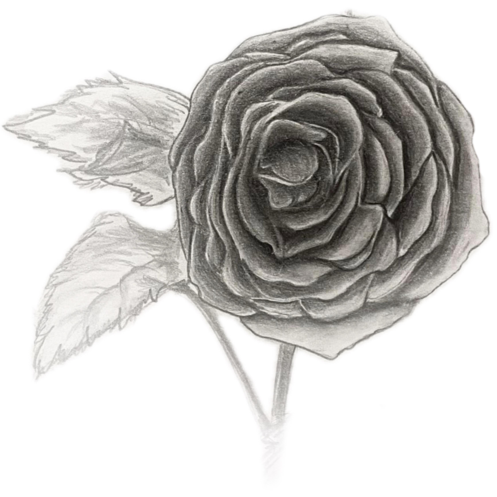
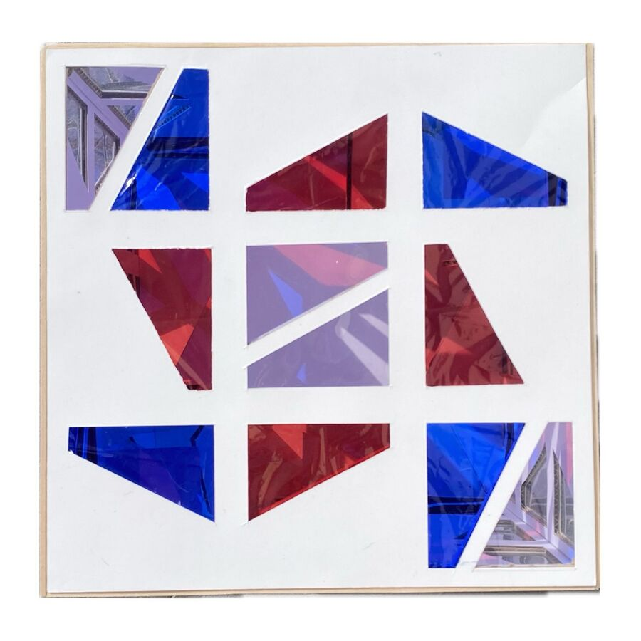
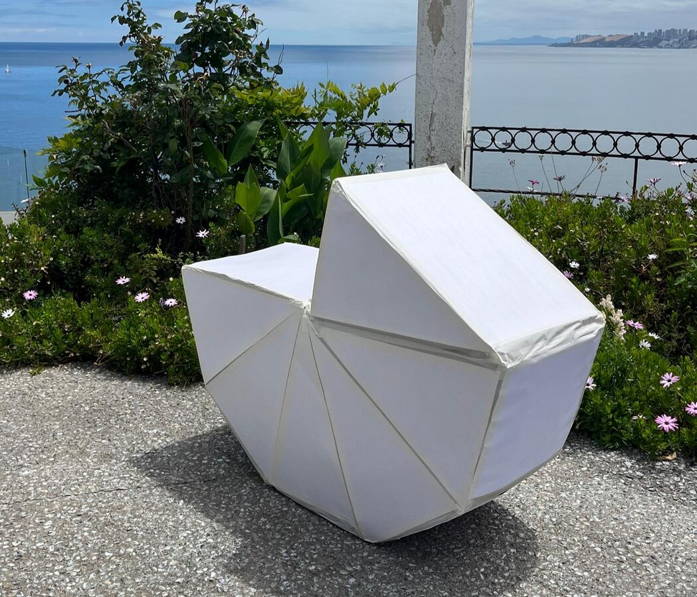

01
Rosa Grandiflora
Wiki Casiopea ↗Estudio riguroso de la forma natural, texturas orgánicas y proporciones de la rosa mediante el dibujo de observación. Traducción gráfica de los dobleces y geometrías internas de la flor al plano bidimensional.

02
Tránsito Sinuoso en un Flujo Intangible
Wiki Casiopea ↗Propuesta basada en unidades discretas translúcidas que interactúan directamente con la luz y el espacio circundante, modificando la percepción volumétrica a través de flujos intangibles.

03
Entrega Final: Modo de Habitar
Wiki Casiopea ↗Estructura envolvente a escala humana inspirada en geometrías orgánicas. Pensada para el borde costero, generando un refugio protector que articula la tensión entre el cuerpo y el territorio.